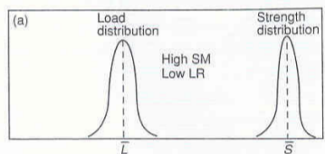
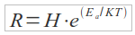

:: Il concetto di affidabilità fisica e le prove di laboratorio ::
L'affidabilità fisica si basa sull'idea di poter effettuare “l'analisi della vita” di un componente, attraverso la definizione di un modello. La formalizzazione di un modello passa attraverso la definizione delle relazioni che incorrono in un sistema (o componente), ovvero gli “ingressi”, i “fattori di influenza” e le prestazioni richieste.
Quando si effettua lo studio dell'affidabilità di un sistema non si può prescindere dal fatto che o prima o poi un componente si guasterà, ciò ovviamente è legato a diversi fattori del componente stesso (presenta una mortalità infantile, qualità scadente del materiale, ecc). Tutti questi fattori non sono prevedibili in modo deterministico, dunque il guasto del componente si può presentare con una certa distribuzione di probabilità.
Le sollecitazioni
Lo scopo di definire un modello per un componente è quello di poter definire i parametri affidabilistici di quest'ultimo, a tale fine bisogna tenere in considerazione due aspetti fondamentali dello studio fisico dell'affidabilità: i meccanismi di guasto ed i tipi di guasto.
I meccanismi di guasto sono legati alle sollecitazioni fatte sul dispositivo, dunque quando si parla di sollecitazioni si devono fare due distinzioni: quelle di tipo meccanico e quelle legate all'ambiente di utilizzo. Per quanto riguarda i componenti elettronici una sollecitazione potrebbe essere la temperatura di lavoro del componente, mentre per impianti chimici potrebbe essere la corrosione.
I fattori di influenza possono essere suddivisi in:
- Fattori di influenza climatici (es: aumento della temperatura a cui sono soggetti i componenti);
- Fattori di influenza meccanici (es: shock legati all'installazione, vibrazioni dei singoli componenti);
- Fattori di influenza elettrica (es: interferenze di tipo magnetiche, interferenze tra apparati).
Per poter effettuare studi approfonditi sui componenti e sulle condizioni climatiche essi supportano (caldo, freddo, caldo umido, ecc), sono state redatte delle tabelle nelle quali risaltano tre zone di funzionamento (riconducibili alle tre zone della “vasca da bagno”).Osservando tutti questi dati ci si chiede se esiste una relazione tra sollecitazione e resistenza di un componente, se così fosse si potrebbero prevenire i guasti in quanto si potrebbero intercettare le zone di pericolo. Dal momento che queste due proprietà seguono una distribuzione casuale, tale legame non è immediato.
In un ambiente normale l'affidabilità del sistema viene misurata come la distanza che c'è fra le due distribuzioni (o meglio fra le code delle due distribuzioni):

Quando la situazione precipita, o meglio quando il margine di sicurezza si abbassa?
- Quando la distribuzione della sollecitazione (L) è molto stretta e la campana della resistenza (S) tende ad allargarsi. Questo porta ad avere una piccola sovrapposizione delle due campane, dunque l'area interessata non è molto elevata, dunque sono pochi i dispositivi a rischio;
- Quando la distribuzione della resistenza (S) è stretta, mentre quella della sollecitazione (L) è allargata, in questa situazione l'area della sovrapposizione è più elevata comportando un aumento del rischio notevole.
Il degrado dei componenti
Dal momento in cui un dispositivo è sottoposto ad una certa sollecitazione (che sia meccanica, climatica o elettrica), esso non manterrà inalterato il suo comportamento, ma probabilmente in un futuro non deterministico, esso potrà presentare delle deviazioni dal suo comportamento normale. Queste sollecitazioni dunque portano ad un degrado della resistenza del dispositivo stesso, poter prevedere come tale degrado avvenga presuppone di poter conoscere il comportamento del componente. Tale conoscenza avverrà solo dopo un certo numero di test che si effettueranno su un certo numero di componenti, appartenenti alla stessa classe del dispositivo in esame.
L'approccio previsionale
Come già detto in precedenza l'analisi dell'affidabilità, effettuata su un determinato componente, viene fatta per avere una “rappresentazione del comportamento del meccanismo di guasto dei componenti”, tutto ciò ci assicurerà una stima dei dati osservati (sempre per effetto della non determinismo). Per poter effettuare tale analisi sono stati creati diversi modelli, uno di questi è il “modello di Arrhenius”, che dice:

dove: H = costante tipica del processo, K = costante di Boltzmann, Ea = energia di attivazione del processo di degradazione, T = temperatura espressa in K.
Nel caso di componenti elettronici tale modello raccoglie nella temperatura il fattore di influenza comune. Il modello di Arrhenius non è da adottare in tutti i casi, in quanto il più delle volte i componenti elettronici moderni non presentano la sensibilità alla temperatura indicata nel modello.
I modi di guasto
I modi di guasto descrivono come un componente può guastarsi, tale analisi diventa necessaria quando si devono conoscere le eventuali conseguenze sul sistema una volta verificatosi il guasto. Si è visto come in che modo i meccanismi di guasto influiscono sul componente (shock, vibrazioni, corrosioni, temperature, ecc), in alcuni casi le cause di guasto devono essere ricercate esternamente al componente. A tale scopo si possono fare delle distinzioni sulle condizioni operative del componente: Attività continua, Attività standby, Attività intermittente.
Da queste tre distinzioni è possibile aggiungere alla categoria dei guasti “catastrophic failure” (ovvero i guasti che compromettono il sistema), altre due categorie: “degraded failure” e “incipient failure”. Con la prima categoria si fa riferimento a quella classe di guasti che sono causati da un degrado graduale del componente, mentre la seconda fa riferimento alla classe dei guasti che si verificano se non si effettua una manutenzione.
Prove di laboratorio: prove sui componenti e sistemi
Con il termine prova intendiamo quella serie di operazioni che devono essere fatte per verificare, quantificare, classificare una caratteristica o proprietà di un'entità (dunque componente o sistema). Si possono fare due distinzioni sul tipo di prova condotta:
- prova di conformità: è quella prova che verifica se un componente possiede una determinata proprietà;
- prova di determinazione: è quella prova effettuata con lo scopo di determinare una proprietà per un dato componente.
Quando di parla di prove di lunga durata generalmente si fa riferimento a quelle prove in cui la maggior parte del campione preso in esame termina il test con successo (presenta un degrado delle prestazioni, ma comunque assicura ancora le funzioni richieste). Dunque, facendo un confronto con la “curva a vasca da bagno”, tali componenti ricadranno sempre nella terza zona. Una tale classificazione risulta non utilizzabile, quello che i fa è testare i componenti (con sollecitazioni opportune) in ambienti in cui si riesce ad accelerare il degrado delle prestazioni. Si parlerà dunque di prove di vita accelerate. Quando si effettuano le prove con il secondo metodo è necessario riadattare i risultati, in quanto si deve tener conto che i valori ottenuti sono soggetti al fattore di accelerazione.
Indipendentemente dalla prova eseguita, dal tipo di sollecitazione, dalla durata, le prove sui componenti seguono sempre quattro fasi principali:
- Assestamento preliminare: operazione eseguita sul componente (o sistema) al fine di eliminare gli effetti del suo stato precedente (es: lasciandolo a temperatura ambiente);
- Controlli e misure iniziali: tutti i componenti che devono essere sottoposti alla prova vengono controllati al fine di controllarne l'effettivo funzionamento;
- Trattamento: il componente/sistema viene sottoposto al trattamento prescelto (sollecitazione climatica, elettrica, meccanica);
- Riassestamento: finito il trattamento i componenti sono riportati in uno stato “normale” in cui è possibile misurare lo stato di degrado provocato dalla prova.
In genere nelle prove di laboratorio si distinguono:
- Prova combinata: in cui vengono combinate più sollecitazioni (es: caldo-umido);
- Prova composita: in cui vengono applicate in successione due o più sollecitazioni. Tale successione ha un'influenza sul dispositivo (es: caldo-umido → caldo secco);
- Sequenza di prova: in cui vengono applicate in successione due o più sollecitazioni, le quali non hanno influenza sul dispositivo (es: saldatura → cambi rapidi di temperatura → ecc).
Torna alla pagina di Affidabilità Dei Sistemi